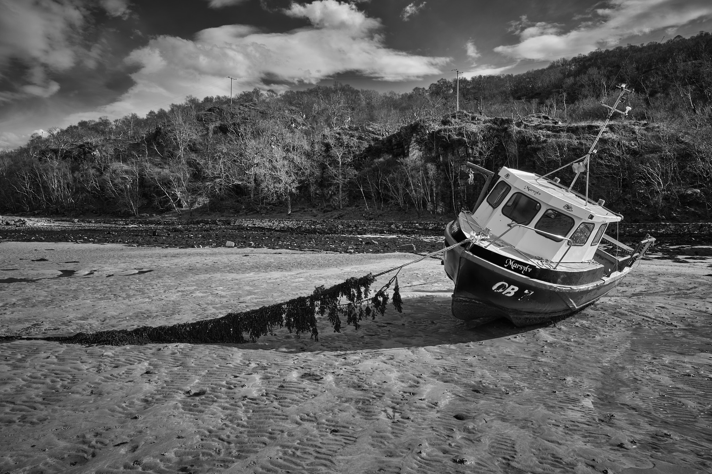
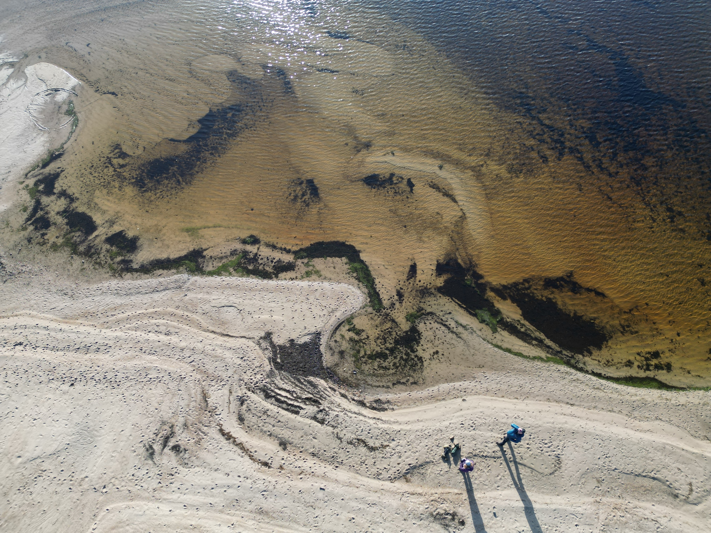

Ardnamurchan and Moidart
This term has been quite a slog, and this week in particular has brought challenges both predictable and unexpected, and equally unwelcome. Very welcome, then, is a few days of retreat in one of our favourite places on this amazing planet of ours, by the Ardnamurchan peninsular.
Saturday
We arrived uncharacteristically early and so stopped to stretch our legs and lungs before heading to our cottage on Loch Shiel. We saw the steam train on the way up, and what seemed like thirty thousand people at Glenfinnan desperate to watch it go over the viaduct. We passed by that opportunity to seek the road less travelled.
 Samalaman harbour X-T5, f/16 at 1/60s1
We found Samalaman Bay, with population but a population much more at leisure. Kayakers in the water, a family playing football on the beach, others reading and idly doing the crossword in the fresh air. We wandered on the shore making photographs, watching plovers and hooded crows, studying the urchins and just breathing.
Samalaman harbour X-T5, f/16 at 1/60s2
Further up the road, we found a nice view back toward Glen Moidart, by three stone piles marked on the OS map as Captain Robertson’s Cairn. I pushed my luck with an image taken hand-held at 1/30s and either I am already quite chilled now, or that image stabilisation in the X-T5 is pretty good. Click the image for a closer look.
Glen Moidart X-T5, f/16 at 1/30s3
Sunday
A close encounter with geese and an eagle on the shores of Loch Shiel, then a herd of deer scampering past the cottage, were precursors to a leisurely country breakfast. We headed out to explore Ardtoe and Kentra Bay with the dynamics of Scottish weather broad-brushing new scenery as we passed through the landscape. On the road, a folorn looking phone box stood mocking the advance of technology and the flatline mobile signal here, which is actually part of the attraction.
It’s good to talk X-T5, f/11 at 1/30s4
Although it wasn’t the weather to visit the singing sands (it apparently needs to be dry), we took a test drive to the car park at the start of the walking route that takes you there, at Arivegaig.
The family X-T2, 1/125s, f/7.1, 400mm5
On the way down, we noted how rich the wildlife is here in comparison with other places we’ve been up and down the western highlands. After the eagle this morning, other birds had made their presence felt, as had the deer. The deer camouflage seems to make them confident and relaxed close to the fairly quiet roads. Sheep are confident, too, ambling along and disrespecting the passing places. They don’t need camouflage. They seem to think they are indestructible, like Edinburgh pedestrians. We eat a lot more lamb than we do venison, just saying.
Kinlochmoidart pier X-T5, f/16 at 1/30s, ISO400
I couldn’t resist this photogenic old pier on the road beside Loch Moidart’s glistening green sandbanks. We may return, having overheard in a restaurant this evening that it’s a good place for otters.
Monday
Between heavy rain showers, we took a walk to the local beach, as much to seek out more of the wildlife as to just stretch our legs. The river Shiel runs into the loch, with other inlets feeding the waters.
Loch Shiel X-T5, f/8 at 1/500s, ISO200
The geese were occupying the pasture nearby, without being harrassed by the eagle today. This character quickly assumed alpha status and went through his best traffic cop routine. His pal seemed slighty embarrassed.
 No, that way X-T2, 1/1000s, f/5.6, 400mm6
No, that way X-T2, 1/1000s, f/5.6, 400mm6
Castle Tioram on Loch Moidart was built over 800 years ago by Amie of the Clanranalds (Macdonald, 1889) after her husband, “Good John” of Isla had divorced her. It was torched by the clan chief Allan Macdonald during the Jacobite uprising in 1715 and has remained uninhabited since.
Castle Tioram X-T5, f/16 at 1/30s, ISO125
The castle is reached by walking across the sand bar at Doirlinn. It is green on account of the damp and slippery approaches that kept the castle safe for so long from attackers. The Clanranalds had plenty of those, and the Priest of Moidart, Charles Macdonald, describes many in detail, such as this account from a fight between the outnumbered Frasers and Clanranalds:
“… like brave men, determined to cut their way through the opposing ranks, or die in the attempt. A most furious and sanguinary hand-to-hand fight ensued. Owing to the heat of the weather, the combatants threw off their upper garments, and fought, like butchers…” (ibid., 47)
Castle Tioram X-T5, f/16 at 1/60s, ISO400, stitch of two images
Tuesday
 Quite the selfie DJI, automatic jpg capture over the beach at Loch Shiel
Back to the shores of Loch Shiel for a walk before breakfast and a bit of drone activity. We’re still learning how to use this amazing little machine but even the practice sequences are pretty impressive: the bird’s eye view is something mankind has sought since Icarus.
The Singing Sands DJI, DNG adjusted in Capture One
We pushed the advantage of our aerial platform and went on the long round trip walk to the Singing Sands at Gortenfearn to capture it. The sand doesn’t actually sing, by the way – it’s more of a squeak when you walk on dry stretches of it. From the car park by Arivegaig, the walk took us past the southern edge of Kentra Bay and through forestry and down to the beach. By the time we got there, all had left but a couple of wild campers who gave us a cheery wave from their lookout above the beach. They must have had a better handle on the weather, which turned to gusty rain for the 6km walk back to the car.
 The Singing Sands Screenshot from video playback
The Singing Sands Screenshot from video playback
It’s no hardship: I was told by a lawyer once that in Scotland, we believe that a little suffering is good for you. I can’t argue with that; how else might you fully appreciate a nice hot bath and glass of wine once you’re back at base, toasty warm and dry again?